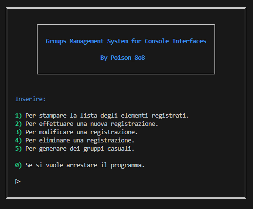

Presentazione
Chi sono?
Sono un ragazzo italiano di diciotto anni appassionato di musica e sopratutto
informatica.
Frequento le scuole superiori e spesso occupo il mio tempo libero
programmando e imparando cose nuove.
Il mio principale linguaggio è il Python, ma conosco anche un po di HTML, CSS (la via per le arti oscure è lunga e travagliata), JavaScript (fores il mio linguaggio schiferito) e il buon vecchio C.
A cosa lavoro?
Attualmente sviluppo progetti principalmente didattici e ho iniziato a mettere le mani un po ovunque:
Web Scraping, Discord Bot, Pagine Web statiche,
Data Manipulation, Videogiochi e molto altro.
Che strano niente intelligenza artificiale.
Progetti
I progetti che sto attualmente sviluppando
Groups Management System for Console Interfaces
Un giorno nella mia classe servivano dei gruppi casuali per le interrogazioni programmate.
Quindi ho deciso di creare questo programma che nel corso del tempo ho sviluppato e migliorato.
Il programma è provvisoriamente testabile:
Qui
Il codice sorgente è disponibile a questa
repository.
le features disponibili sono:
- Registrare un elemento.
- Modificare una registrazione.
- Eliminare una registrazione.
- Visualizzare le registrazione effettuate.
- Generare e visualizzare dei gruppi casuali formati dagli elementi precedentemente registrati.
Immagine del menu principale:
Poison's Utilities
Il mio modulo in sviluppo
Un piccolo spoiler:
Il mio Portfolio
Questa pagina.
Non è molto lo so, ma non sono uno sviluppatore web.
Ma potete comunque cambiare tema alla pagina: